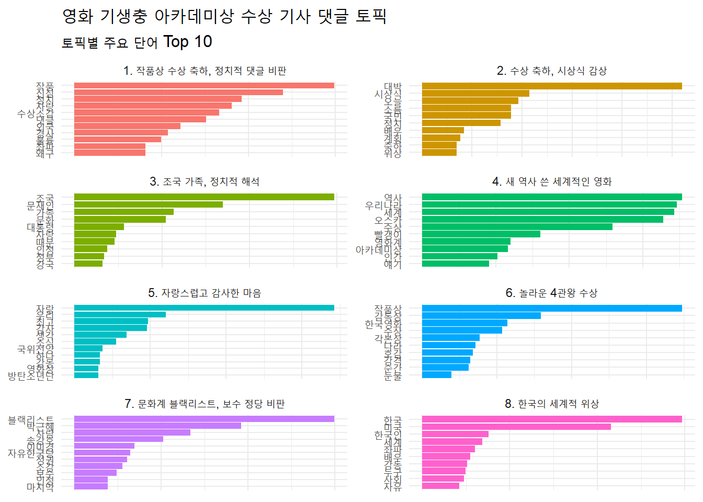
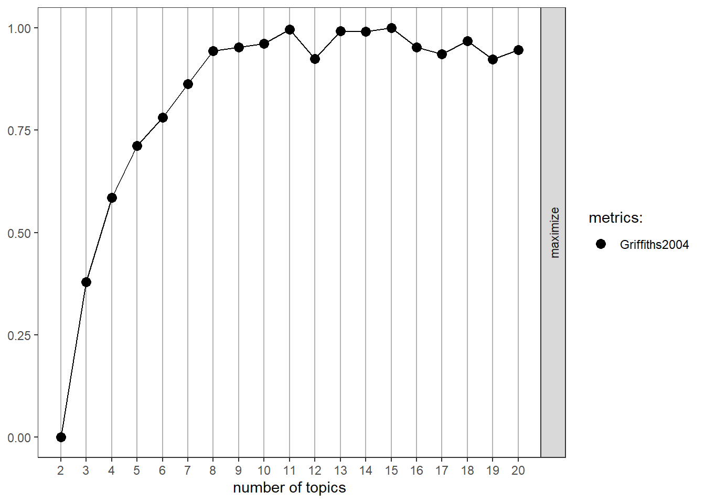

Rows: 4150 Columns: 5
── Column specification ────────────────────────────────────────────────────────
Delimiter: ","
chr (4): reply, press, title, url
dttm (1): reg_time
ℹ Use `spec()` to retrieve the full column specification for this data.
ℹ Specify the column types or set `show_col_types = FALSE` to quiet this message.
raw_news_comment
# A tibble: 4,150 × 6
reg_time reply press title url id
<dttm> <chr> <chr> <chr> <chr> <int>
1 2020-02-10 16:59:02 "정말 우리 집에 좋은 일이 생겨 … MBC '기… http… 1
2 2020-02-10 13:32:24 "와 너무 기쁘다! 이 시국에 정말 … SBS [영… http… 2
3 2020-02-10 12:30:09 "우리나라의 영화감독분들 그리고 … 한겨… ‘기… http… 3
4 2020-02-10 13:08:22 "봉준호 감독과 우리나라 대한민국… 한겨… ‘기… http… 4
5 2020-02-10 16:25:41 "노벨상 탄느낌이네요\r\n축하축하… 한겨… ‘기… http… 5
6 2020-02-10 12:31:45 "기생충 상 받을때 박수 쳤어요.감… 한겨… ‘기… http… 6
7 2020-02-10 12:31:33 "대한민국 영화사를 새로 쓰고 계… 한겨… ‘기… http… 7
8 2020-02-11 09:20:52 "저런게 아카데미상 받으면 '태극… 한겨… ‘기… http… 8
9 2020-02-10 20:53:27 "다시한번 보여주세요 영화관에서 … 한겨… ‘기… http… 9
10 2020-02-10 20:22:41 "대한민국 BTS와함께 봉준호감독… 한겨… ‘기… http… 10
# ℹ 4,140 more rows
기본적인 전처리
# 기본적인 전처리library(stringr)library(textclean)news_comment <- raw_news_comment %>%mutate(reply =str_replace_all(reply, "[^가-힣]", " "),reply =str_squish(reply)) %>%distinct(reply, .keep_all = T) %>%# 중복 댓글 제거filter(str_count(reply, boundary("word")) >=3) # 짧은 문서 제거, 3단어 이상 추출news_comment
# A tibble: 3,329 × 6
reg_time reply press title url id
<dttm> <chr> <chr> <chr> <chr> <int>
1 2020-02-10 16:59:02 정말 우리 집에 좋은 일이 생겨 기… MBC '기… http… 1
2 2020-02-10 13:32:24 와 너무 기쁘다 이 시국에 정말 내… SBS [영… http… 2
3 2020-02-10 12:30:09 우리나라의 영화감독분들 그리고 … 한겨… ‘기… http… 3
4 2020-02-10 13:08:22 봉준호 감독과 우리나라 대한민국 … 한겨… ‘기… http… 4
5 2020-02-10 16:25:41 노벨상 탄느낌이네요 축하축하 합… 한겨… ‘기… http… 5
6 2020-02-10 12:31:45 기생충 상 받을때 박수 쳤어요 감… 한겨… ‘기… http… 6
7 2020-02-10 12:31:33 대한민국 영화사를 새로 쓰고 계시… 한겨… ‘기… http… 7
8 2020-02-11 09:20:52 저런게 아카데미상 받으면 태극기 … 한겨… ‘기… http… 8
9 2020-02-10 20:53:27 다시한번 보여주세요 영화관에서 … 한겨… ‘기… http… 9
10 2020-02-10 20:22:41 대한민국 와함께 봉준호감독님까지… 한겨… ‘기… http… 10
# ℹ 3,319 more rows
# 특정 토픽에서 beta가 높은 단어 살펴보기term_topic %>%filter(topic ==6) %>%arrange(-beta)
# A tibble: 5,995 × 3
topic term beta
<int> <chr> <dbl>
1 6 작품상 0.0695
2 6 감독상 0.0318
3 6 한국영화 0.0228
4 6 수상 0.0214
5 6 각본상 0.0154
6 6 나라 0.0143
7 6 호감 0.0136
8 6 감격 0.0129
9 6 순간 0.0125
10 6 눈물 0.00788
# ℹ 5,985 more rows
# 모든 토픽의 주요 단어 살펴보기terms(lda_model, 20) %>%data.frame()
Topic.1 Topic.2 Topic.3 Topic.4 Topic.5 Topic.6 Topic.7
1 작품 대박 조국 역사 자랑 작품상 블랙리스트
2 진심 시상식 문재인 우리나라 우리 감독상 박근혜
3 정치 오늘 가족 세계 최고 한국영화 사람
4 자랑 국민 문화 오스카 감사 수상 송강호
5 수상소감 소름 대통령 수상 생각 각본상 이미경
6 댓글 정치 자랑 빨갱이 소식 나라 자유한국당
7 외국 배우 때문 영화계 국위선양 호감 정권
8 경사 계획 인정 아카데미상 감동 감격 소감
9 훌륭 축하 정부 인간 하나 순간 보수
10 좌파 위상 강국 얘기 방탄소년단 눈물 인정
11 왜구 최고 호감 로컬 영화상 전세계 마지막
12 배우 한번 와우 내용 한국영화 진정 기생
13 예술 쾌거 사건 좌파 정도 노벨상 하나
14 전세계 생각 국격 정신 와우 소식 네이버
15 아시아 중국 고생 의미 조선 기사 한국
16 호감 다음 덕분 생각 존경 문화 이야기
17 토착 기분 기대 상상 후보 국제 부회장
18 발전 왕이 정말 국민 우한 각본 쓰레기
19 사람들 세상 해도 나라 시대 다들 좌파
20 수준 자랑 눈물 정부 행복 발표 영광
Topic.8
1 한국
2 미국
3 한국인
4 세계
5 좌파
6 배우
7 감동
8 누구
9 사회
10 자유
11 현실
12 영광
13 위대
14 영화제
15 이해
16 자신
17 최우수작품상
18 예상
19 황금종려상
20 이유
# 토픽별 주요 단어 시각화하기# 1. 토픽별로 beta가 가장 높은 단어 추출하기# 토픽별 beta 상위 10개 단어 추출top_term_topic <- term_topic %>%group_by(topic) %>%slice_max(beta, n =10)top_term_topic
# A tibble: 83 × 3
# Groups: topic [8]
topic term beta
<int> <chr> <dbl>
1 1 작품 0.0299
2 1 진심 0.0240
3 1 정치 0.0192
4 1 자랑 0.0181
5 1 수상소감 0.0166
6 1 댓글 0.0151
7 1 외국 0.0122
8 1 경사 0.0107
9 1 훌륭 0.00998
10 1 좌파 0.00814
# ℹ 73 more rows
# 2. 막대 그래프 만들기# install.packages("scales") # restart 알림 발생 시, '아니요' 선택library(scales)
Attaching package: 'scales'
The following object is masked from 'package:purrr':
discard
The following object is masked from 'package:readr':
col_factor
# 토픽별 문서 수와 단어 시각화하기# 1. 토픽별 주요 단어 목록 만들기top_terms <- term_topic %>%group_by(topic) %>%slice_max(beta, n =6, with_ties = F) %>%summarise(term =paste(term, collapse =", "))top_terms
# A tibble: 8 × 2
topic term
<int> <chr>
1 1 작품, 진심, 정치, 자랑, 수상소감, 댓글
2 2 대박, 시상식, 오늘, 국민, 소름, 정치
3 3 조국, 문재인, 가족, 문화, 대통령, 자랑
4 4 역사, 우리나라, 세계, 오스카, 수상, 빨갱이
5 5 자랑, 우리, 최고, 감사, 생각, 소식
6 6 작품상, 감독상, 한국영화, 수상, 각본상, 나라
7 7 블랙리스트, 박근혜, 사람, 송강호, 이미경, 자유한국당
8 8 한국, 미국, 한국인, 세계, 좌파, 배우
# 2. 토픽별 문서 빈도 구하기count_topic <- news_comment_topic %>%count(topic)count_topic
# 3. 문서 빈도에 주요 단어 결합하기count_topic_word <- count_topic %>%left_join(top_terms, by ="topic") %>%mutate(topic_name =paste("Topic", topic))count_topic_word
# A tibble: 8 × 4
topic n term topic_name
<int> <int> <chr> <chr>
1 1 660 작품, 진심, 정치, 자랑, 수상소감, 댓글 Topic 1
2 2 704 대박, 시상식, 오늘, 국민, 소름, 정치 Topic 2
3 3 663 조국, 문재인, 가족, 문화, 대통령, 자랑 Topic 3
4 4 609 역사, 우리나라, 세계, 오스카, 수상, 빨갱이 Topic 4
5 5 708 자랑, 우리, 최고, 감사, 생각, 소식 Topic 5
6 6 690 작품상, 감독상, 한국영화, 수상, 각본상, 나라 Topic 6
7 7 649 블랙리스트, 박근혜, 사람, 송강호, 이미경, 자유한국당 Topic 7
8 8 645 한국, 미국, 한국인, 세계, 좌파, 배우 Topic 8
# 4. 토픽별 문서 수와 주요 단어로 막대 그래프 만들기ggplot(count_topic_word,aes(x =reorder(topic_name, n),y = n,fill = topic_name)) +geom_col(show.legend = F) +coord_flip() +geom_text(aes(label = n) , # 문서 빈도 표시hjust =-0.2) +# 막대 밖에 표시geom_text(aes(label = term), # 주요 단어 표시hjust =1.03, # 막대 안에 표시col ="white", # 색깔fontface ="bold", # 두껍게family ="nanumgothic") +# 폰트scale_y_continuous(expand =c(0, 0), # y축-막대 간격 줄이기limits =c(0, 820)) +# y축 범위labs(x =NULL)
Warning in grid.Call.graphics(C_text, as.graphicsAnnot(x$label), x$x, x$y, :
font family not found in Windows font database
토픽 이름 짓기
# 토픽별 주요 문서 살펴보고 토픽 이름 짓기# 1. 원문을 읽기 편하게 전처리하기, gamma가 높은 순으로 정렬하기comment_topic <- news_comment_topic %>%mutate(reply =str_squish(replace_html(reply))) %>%arrange(-gamma)comment_topic %>%select(gamma, reply)
# A tibble: 5,328 × 2
gamma reply
<dbl> <chr>
1 0.264 "도서관서 여자화장실서 나오는 남자사서보고 카메라있는지없는지 확인했다…
2 0.260 "봉준호 송강호 블랙리스트 올리고 CJ 이미경 대표는 박근혜가 보기싫다는 …
3 0.239 "보수정권때 블랙리스트에 오른 봉준호 송강호가 보기싫다는 박근혜의 말한…
4 0.238 "도서관서 여자화장실서 나오는 남자사서보고 카메라있는지없는지 확인했다…
5 0.235 "당초 \"1917\"과 \"기생충\"의 접전을[초기엔 1917이 훨씬 우세]예상했지…
6 0.234 "박그네 밑에서 블랙리스트 있었는데 ㅋㅋㅋㅋㅋㅋㅋ 이미경이는 박근혜가 …
7 0.226 "위대한 박정희 삼성이 대한민국을 세계에 우뚝 세워 놨기에 가능한 일....…
8 0.225 "기생충 영화보고 좌빨이 얼마나 기생충인지 못느낀 사람 제정신이야? 좌빨…
9 0.225 "봉준호 감독과 송강호 배우는 이명박그네 정권 시절 문화계 블랙리스트 였…
10 0.224 "나중에 기생충 정부 영화 한편 나오겠네. 남자 주연 문xx ,여자주연 김정x…
# ℹ 5,318 more rows
# 2. 주요 단어가 사용된 문서 살펴보기# 토픽 1 내용 살펴보기comment_topic %>%filter(topic ==1&str_detect(reply, "작품")) %>%head(50) %>%pull(reply)
[1] "봉감독의 'local'이라는 말에 발끈했나요? 미국 아카데미의 놀라운 변화입니다. 기생충이란 영화의 작품적 우수성 뿐만 아니라 '봉준호'라는 개인의 네임벨류와 인간적 매력과 천재성이 이번 아카데미 수상에 큰 역할을 한 것 같네요. 그의 각종 수상소감을 보면 면면히 드러나네요~~"
[2] "이 작품을 기준으로 앞으로도 계속 쓰여질 것입니다. 진심으로 축하드립니다^^"
[3] "이런 위대한 작품과 감독을 블랙리스트에 올려 대중에게서 뺏어 묻어버릴려고 했던 쥐닥정권 그걸 찬양하는 소시오패스일베충 벌래에게 무한한 저주가 함께하길 기원합니다.^^"
[4] "폐쇄적이라는 평가를 받아온 오스카가 외국영화에 작품상을 주는걸 보니 또다른 의미의 권위가 느껴진다"
[5] "봉준호감독 대단하다 열등감이있는외모 안된다는 편견 자신과의 싸움 결국 그럭게 말하는자 들은 뭐하고사는지?우스꽝스럽다고 비꼬고 놀렸을만한 모습이지만 그들은 이런상 한번이라도 받을수있는 자격이있는지 암튼 대다하고 작품활동열심히 하셔서 멋진사람으로 기억되길,.,,외모비하하는 찌질이들은 아무재능없는 소인배가되고 결국 계속 악플 올렸다간 따돌림이나 당하겠지..."
[6] "이런 감독을 박그네 토착왜구 정부에서는 좌파 블랙리스트에 올렸었지 ㅋㅋㅋ 근데 정작 미국에선 작품상 ㅋㅋㅋ"
[7] "축하합니다!! 자랑스럽고 멋져요^^ 앞으로도 멋진 작품 부탁드립니다!"
[8] "정말 대단하다는 말밖에는~ 진심으로 축하드립니다. 앞으로도 좋은 작품 많이 만들어주세요~^^"
[9] "한류의 또다른 이정표를 봉준호가 해내는구가 오스카상 특히 작품상은 비영어권 국가가 수상하기 어려운 상당히 보수적인데 대단하다 썩은 정치로 한숨쉬는 국민들에게 또 다른 희망과 자부심을 심어줘서 고맙다"
[10] "작품이라고 할 수 없는 습작 정도의 물건을 상을 줬으니, 그동안 오스카 상이 얼마나 추접한 상인지 증명하는 것임."
[11] "기생충을 재밌게는봤지만,작품성이 그리대단한줄은 몰랐네요,축하합니다"
[12] "완전감동이네요..제2의기생충같은 작품 많이많이 만들어주세요.."
[13] "봉감독님 너무 축하합니다! 앞으로도 훌륭한 작품들 기대합니다♥"
[14] "작품도 뛰어났지만 국가 위상이 그만큼 높아진 것. 촛불시민혁명 국민들이 비폭력적으로 정권교체 하는데 성공하고 문 대통령이 남북정상회담 멋지게 해내셨고 그 과정을 거치면서 대한민국이 서구 사회에 유명해진 것. 분위기가 뒷받침 해주지 않으면 아무리 작품이 좋아도 이런 성과는 못냄."
[15] "각본상받았다고 하길래 그게 끝인줄 알았더니 시작에 불과했었네. 한국영화의 쾌거로구나. 헐리웃영화가 아닌 작품이 작품상을 받은게 최초라는데 역사를 썼다. 와우~"
[16] "작품..감독..배우는 말할 것도 없고 샤론최님까지 통역을 잘 해주셔서 외국사람들으 현지호응도..작품 이해도가 높아져서.. 분위기 잘 잡아주셨나보네요."
[17] "개인적으론 봉감독 작품중에 여전히 살인의 추억이 가장 인상깊지만... 기생충은 전세계적으로 화두가 된 주제선정이 탁월했고 풀어내는 모양새도 능수능란하게 과하지도 덜하지도 않게 딱 좋았다. 여유있게 유머를 가지고 오스카를 향한 긴 레이스에서 정치[?]도 잘했다."
[18] "백인우월주의가 팽배한 그 나라에서 조차 인정할 수 밖에 없을만큼 대단한 작품이었다는 반증인거지. 그리고 저 영화 보고 기분 더러웠다는 건 제대로 느낀거 아닐까? 기생충 자체가 사회풍자가 들어있으니까. 원래 너무 현실적인게 가장 불편함. 극구 부정하고 싶거든."
[19] "각본상 준거보니 작품상은 1917 아니면 조커다"
[20] "축하드려요. 당신은 우리의 자랑입니다. 좋은 작품 앞으로도 기대할게요^^ 짝짝짝"
[21] "오스카 작품상 탔다 비영어권처음이다"
[22] "축하합니다~^^. 작품상까지 받은 작품인데 주연상이 없음이 좀 아이러니지만...."
[23] "김기덕 감독님 영화는 이렇게 해야됩니다. 맨날 어둡고 보기 힘든 영화만 만들지 마시고 이런 작품도 만들어 주세요! 봉 감독님 진심 축하드립니다."
[24] "솔직히 작품상은 조커가 타는 게 맞는데 동양인 쿼터 준다고 많이 배려해 준 듯."
[25] "솔직히 눈물난다ㅡ내가 내 인생영화로 꼽았던 작품! 개봉첫날 두번 봤다 ㅜ.ㅜ"
[26] "와...햐늘을 찌르는 작품성을 바탕으로 아카데미는 로컬영화제라고 인터뷰하던 그대의 고귀한 자태는정말 멋잇엇어요....자랑스럽습니다"
[27] "남들은 남감독 작품이 해외서 상을 타니 입에 침이 마르도록 찬양을 한다. 왜 저렇게 남자일을 자기일처럼 좋아할까? 저 자리에 여성은 없고 향후 몇 십년 동안 없을 수도 있단 생각에 난 웃음도 나질 않는다. ㅉ"
[28] "우리나라 영화제..10년도 넘은 배우한테..신인신ㅇ 주고 공동수상 남발하고..감독상 받으면 작품상은 포기해야 하는데..외국의 냉철함 너무 보기 좋네"
[29] "축하합니다. 어깨가 으쓱해집니다. 작품상까지 수상하시길 응원합니다."
[30] "꿈 아니냐?? 작품상??? 전 세계에서 한해 제일 잘만들면서 대중성도 있는 작품에 주는 그상 맞냐? World no.1 ㄷ ㄷ ㄷ ㄷ ㄷ 진짜 개소름"
[31] "근데 나는 봉준호 송강호도 대단하지만 이선균이 진심 대단함. 이선균 필모는 넘사네 진짜. 작품도 다양하고."
[32] "정말 자랑스럽습니다! 눈물흘리며 같이 환호했습니다! 앞으로도 역사에 남을 작품 많이 남겨주세요!"
[33] "다른 작품들도 진짜 쟁쟁했는데.... 이건 대한민국 영화의 새로운 역사입니다!!! 봉 감독님 진짜 축하드려요!!! 그리고 수구꼴통 토착왜구 새끼들아!!! 제발 이런걸 정치적인거랑 엮지마라!!!!! 늬들의 행태 너무나 역겹다!!!!!!"
[34] "아카데미에서 큰상받은건 축하하고 대한민국인으로서 자랑스럽긴한데, 영알못은 기생충의 어떤점이 작품성이 있는지 잘 모르겠다."
[35] "일하다가 눈물날뻔..^^ 감격스럽네요 자랑스럽네요 봉감독님의 더 많은 작품, 훌륭한 작품 기대합니다~~^^"
[36] "얼마전 괴물 다시보는데도 진짜 봉감독님 작품 너무 재밌어요! 수상 축하드려요!"
[37] "작품성과 흥행성을 모두 거머쥔 시대상을 딱 반영하는 상이다. 오스카도 반영했을듯 하네ㅋ"
[38] "자본주의 민주주의 아메리카가 인정한 작품. 기생충이 짱개의 유사사회주의 찬양한것처럼 달창 거지기생충들 그냥 좋댄다 ㅋㅋㅋㅋㅋ"
[39] "작품상은 가능성이 희박하다는 기사를 봤었는데... 기적이네요.... 투표 방식이 이번에 바껴서 그런가"
[40] "봉준호 감독님! 대한민국을 널리 알려주셔서 감사합니다. 수상소감 말씀하실때 눈물이 핑 돌더군요. 앞으로도 좋은 작품 세계적인 영화를 기대합니다. 축하드립니다.기생충! 봉준호 감독님! 화이팅입니다 ^^"
[41] "아마 반백년내에는 한국에서 이런 영화가 나오긴 힘들듯.. 칸 황금종려상과 아카데미 작품상을 동시에 수상한것도 전세계적으로 60년만에 일인거고.. 진짜 어메이징한 올해 한국의 최대 이변일듯.."
[42] "예전 살인의 추억을 극장에서 보고 작품,상업성을 다 갖춘 감독의 출현에 지금껏 응원해왔어요 정말 뭉클합니다"
[43] "블랙리스트랑 작품의 완성도랑 무'슨상'관임? 예술적으로 완성도 높은 작품을 만들었으니 상을 받은거지. 문화계 블랙리스트가 뭐 능력떨어지는 예술인들에 대한 리스트도 아니고."
[44] "축하 합니다 쭉 좋은 작품 부탁 합니다."
[45] "감독님 정말 멋집니다!!! 헐리우드작품 감독님의 영화도 한번 보고싶습니다!! 화이팅~~~~~~"
[46] "작품상 받을 포스인데..."
[47] "축하합니다. 앞으로도 좋은 작품 기대하겠습니다."
[48] "축하드립니다~ 국제적 작품이 되엇어요 ♡~♡"
[49] "황금종려상에 아카데미 작품상까지 정말 대단합니다"
[50] "대단~^^ 작품상까지~ 올들어 젤 기쁜 기사네요"
[1] "한국문화는 1등수준. 정치는 개돼지 3등수준. 대한민국 문화수준을 엎 그레이드 한 봉준호감독에게 존경을 표한다. 월드컵4강.봉준호감독 오스카수상. 한국국민들 절대로 잊혀지지않는 대사건이다. 정말 진심으로 축하드립니다.특히 CJ가 한국영화 산업에 큰 발전에 국민의 한 사람으로 감사드린다."
[2] "진심 축하드립니다. 대한민국 예술처럼 정치, 경제도 발전해서 살기좋은 나라가 되었으면 좋겠네요"
[3] "이 작품을 기준으로 앞으로도 계속 쓰여질 것입니다. 진심으로 축하드립니다^^"
[4] "소름이 돋을 정도로 믿기지 않습니다! 진심으로 축하드립니다 살인의추억을 보고 우리나라에도 이렇게 훌륭한 영화를 만드는 감독이 있구나 느꼈고 그 이후로 계속 봉감독님 영화를 챙겨보게 되었는데 이제는 세계인도 인정해주는 감독이 되어 너무나도 벅찹니다 다시한번 진심으로 축하드립니다"
[5] "봉감독님 진심 축하드립니다! 아카데미에서 외국 영화 기생충이 4관왕을 차지했다는 것은 아카데미도 기류가 바뀌고 있다는 ... 험지에서 대단한 업적을 남긴 감독, 배우들, 스텝들에게 찬사를 보냅니다!"
[6] "기생충!! 우와~~^^이게 실화인가요? 진심으로 축하드려요"
[7] "정말 대단하다는 말밖에는~ 진심으로 축하드립니다. 앞으로도 좋은 작품 많이 만들어주세요~^^"
[8] "진심으로 축하드립니다. 자랑스럽습니다."
[9] "진심 축하드려요 봉준호감독님 진심 응원합니다"
[10] "한국영화계에 이런일이 생길 줄은 꿈에도 몰랐는데 4관왕 진심으로 축하드립니다."
[11] "영화 보면서 봉준호는 천재다 라고 외쳤는데~ 진심 자랑스럽다 축하합니다"
[12] "와 진심 대박 ㅜㅜ 화이트 파티인 아카데미에서 ㅠㅜ"
[13] "와.. 대박 진심 호명순간 소리질렀어여"
[14] "김기덕 감독님 영화는 이렇게 해야됩니다. 맨날 어둡고 보기 힘든 영화만 만들지 마시고 이런 작품도 만들어 주세요! 봉 감독님 진심 축하드립니다."
[15] "세계가 인정하는 대한민국 예술! 진심으로 자랑스럽다ㅠㅠ"
[16] "근데 나는 봉준호 송강호도 대단하지만 이선균이 진심 대단함. 이선균 필모는 넘사네 진짜. 작품도 다양하고."
[17] "이걸 정치적으로 까는거보면 뇌가있나 싶다 진심으로 /"
[18] "축하드립니다. 대한민국 사람으로서 봉준호감독님 세계적인 거장에 한걸음 다가가신걸 진심으로 축하드려요~~^^"
[19] "우와 !!!!! 진심으로 축하드려요 !!!!"
[20] "어~~ 진짜 되네? 진심으로 축하드려요"
[21] "진심 축하드립니다~~~ 너무 멋져요!!"
[22] "대박입니다~~ 진심으로 축하합니다~!!!"
[23] "와 대박이네요 ~ 진심으로 축하드립니다."
[24] "아카데미 4관왕 거머쥐신 봉준호 감독님 진심 추카드려요"
[25] "미쳤다 진심 비명지르고"
[26] "진심 대박이다.와"
[27] "캬 역사를만드셨네 진심 축하드립니다"
[28] "와...진심 미쳤다이건."
[29] "진심 축하드려요 영화못봤는데 봐야겠네요"
[30] "진짜 자랑스럽고 하고싶은 말이 많은데 벅차서 글이 안써지네요 봉감독님~♡ 진심으로 축하드려요"
[31] "너무 자랑스럽다. 진심. 레알."
[32] "진심 소름~~축하해요!"
[33] "봉준호 감독관님 진심으로 축하드립니다."
[34] "와 너무 기쁘다! 이 시국에 정말 내 일같이 기쁘고 감사하다!!! 축하드려요 진심으로!!!"
[35] "진심...너무 자랑스럽습니다. ㅠㅠㅠㅠㅠ 너무 감격스러워요 ㅠㅠㅠ"
[36] "진심 역사적인 쾌거입니다."
[37] "진심 동시대에 살고 있는 것만으로도 영광스럽다ㅠㅠㅠ"
[38] "봉준호 감독! 기생충! 송강호외 배우님들 대한민국 진심으로 축하합니다~"
[39] "진심으로 축하하며 여러분들이 진정한 애국자네요"
[1] "한국문화는 1등수준. 정치는 개돼지 3등수준. 대한민국 문화수준을 엎 그레이드 한 봉준호감독에게 존경을 표한다. 월드컵4강.봉준호감독 오스카수상. 한국국민들 절대로 잊혀지지않는 대사건이다. 정말 진심으로 축하드립니다.특히 CJ가 한국영화 산업에 큰 발전에 국민의 한 사람으로 감사드린다."
[2] "진심 축하드립니다. 대한민국 예술처럼 정치, 경제도 발전해서 살기좋은 나라가 되었으면 좋겠네요"
[3] "좌좀세력, 태극기부대, 빨갱이, 일베애들과 이런것들을 이용애 먹는 정치인들만 없어지면 우리나라 엄청 발전할텐데...기업, 문화 모두 선진국인데 저런것들이 발목을 잡고 너무 깍아먹는다."
[4] "정치충들 상은 봉준호가 받았는데 왜 정치얘기를하고있냐"
[5] "문화는 일류 정치는 삼류에 개막장"
# 3. 토픽 이름 목록 만들기name_topic <-tibble(topic =1:8,name =c("1. 작품상 수상 축하, 정치적 댓글 비판","2. 수상 축하, 시상식 감상","3. 조국 가족, 정치적 해석","4. 새 역사 쓴 세계적인 영화","5. 자랑스럽고 감사한 마음","6. 놀라운 4관왕 수상","7. 문화계 블랙리스트, 보수 정당 비판","8. 한국의 세계적 위상"))
# 토픽 이름과 주요 단어 시각화하기# 토픽 이름 결합하기top_term_topic_name <- top_term_topic %>%left_join(name_topic, name_topic, by ="topic")top_term_topic_name
# A tibble: 83 × 4
# Groups: topic [8]
topic term beta name
<int> <chr> <dbl> <chr>
1 1 작품 0.0299 1. 작품상 수상 축하, 정치적 댓글 비판
2 1 진심 0.0240 1. 작품상 수상 축하, 정치적 댓글 비판
3 1 정치 0.0192 1. 작품상 수상 축하, 정치적 댓글 비판
4 1 자랑 0.0181 1. 작품상 수상 축하, 정치적 댓글 비판
5 1 수상소감 0.0166 1. 작품상 수상 축하, 정치적 댓글 비판
6 1 댓글 0.0151 1. 작품상 수상 축하, 정치적 댓글 비판
7 1 외국 0.0122 1. 작품상 수상 축하, 정치적 댓글 비판
8 1 경사 0.0107 1. 작품상 수상 축하, 정치적 댓글 비판
9 1 훌륭 0.00998 1. 작품상 수상 축하, 정치적 댓글 비판
10 1 좌파 0.00814 1. 작품상 수상 축하, 정치적 댓글 비판
# ℹ 73 more rows
# 막대 그래프 만들기ggplot(top_term_topic_name,aes(x =reorder_within(term, beta, name),y = beta,fill =factor(topic))) +geom_col(show.legend = F) +facet_wrap(~ name, scales ="free", ncol =2) +coord_flip() +scale_x_reordered() +labs(title ="영화 기생충 아카데미상 수상 기사 댓글 토픽",subtitle ="토픽별 주요 단어 Top 10",x =NULL, y =NULL) +theme_minimal() +theme(text =element_text(family ="nanumgothic"),title =element_text(size =12),axis.text.x =element_blank(),axis.ticks.x =element_blank())
Warning in grid.Call(C_stringMetric, as.graphicsAnnot(x$label)): font family
not found in Windows font database
Warning in grid.Call(C_stringMetric, as.graphicsAnnot(x$label)): font family
not found in Windows font database
Warning in grid.Call(C_stringMetric, as.graphicsAnnot(x$label)): font family
not found in Windows font database
Warning in grid.Call(C_textBounds, as.graphicsAnnot(x$label), x$x, x$y, : font
family not found in Windows font database
Warning in grid.Call(C_textBounds, as.graphicsAnnot(x$label), x$x, x$y, : font
family not found in Windows font database
Warning in grid.Call(C_textBounds, as.graphicsAnnot(x$label), x$x, x$y, : font
family not found in Windows font database
Warning in grid.Call(C_textBounds, as.graphicsAnnot(x$label), x$x, x$y, : font
family not found in Windows font database
Warning in grid.Call.graphics(C_text, as.graphicsAnnot(x$label), x$x, x$y, :
font family not found in Windows font database
Warning in grid.Call(C_textBounds, as.graphicsAnnot(x$label), x$x, x$y, : font
family not found in Windows font database
Warning in grid.Call(C_textBounds, as.graphicsAnnot(x$label), x$x, x$y, : font
family not found in Windows font database

최적의 토픽 수 도출
# 하이퍼파라미터 튜닝으로 토픽 수 정하기# 1. 토픽 수 바꿔가며 LDA 모델 여러 개 만들기# install.packages("ldatuning") # 사양이 낮은 컴퓨터는 설치가 어려움, 에러 지속적으로 발생되는 것 확인library(ldatuning) # windows defender 알림 발생 시, '홈 네트워크, 회사 네트워크 등의 개인 네트워크'만 체크 후 '엑세스 허용' 선택models <-FindTopicsNumber(dtm = dtm_comment, # windows defender 알림 발생 시, '홈 네트워크, 회사 네트워크 등의 개인 네트워크'만 체크 후 '엑세스 허용' 선택topics =2:20,return_models = T,control =list(seed =1234))models %>%select(topics, Griffiths2004)
Warning: The `<scale>` argument of `guides()` cannot be `FALSE`. Use "none" instead as
of ggplot2 3.3.4.
ℹ The deprecated feature was likely used in the ldatuning package.
Please report the issue at <https://github.com/nikita-moor/ldatuning/issues>.

# 3. 모델 추출하기# 토픽 수가 8개인 모델 추출하기optimal_model <- models %>%filter(topics ==8) %>%pull(LDA_model) %>%# 모델 추출 .[[1]] # list 추출